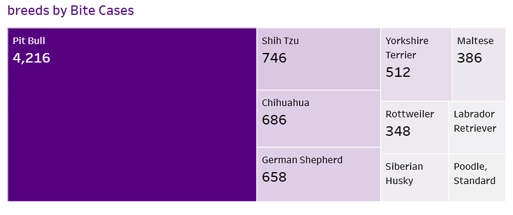
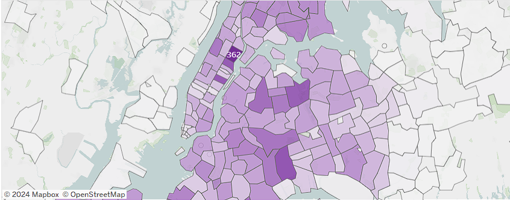
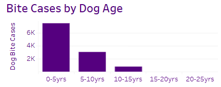

NYC Public Safety Optimization Analysis
Introduction
As a pet owner, I often see other pet owners walk their dogs unleashed and without proper training. I was then curious about whether dog bite cases were a problem in NYC given that I found it concerning the number of pet owners that do not take any precautions around other people and other dogs. I found this dataset that had reported dog bite cases in NYC from 2015-2022 and I then set out to find interesting insights and analysis revolving around dog bite cases. In addition, by analyzing this dataset, I could highlight trends and patterns involving this issue and offer insights that could help prevent such incidents from occurring.
Research Questions
The questions I wanted to answer were:
- Are certain breeds more involved in bite incidents than others?
- What is the trend of dog bites by borough from 2015-2022?
- Which zip codes have the most number of dog bite cases?
- Does the age of the dog correlate with bite incidents?
- Are spayed/neutered dogs more likely to bite than non-spayed/neutered dogs?
- Are total cases of dog bites increasing or decreasing over time?
These questions help find trends and insights into dog bite cases that may not be obvious initially.
Data Source
The analysis is based on the official dog bite incident records provided by the New York City Department of Health and Mental Hygiene, covering the years 2015-2022.
This dataset contains
- Rows: 26.1k
- Columns: 9
- Each row is a Dog Bite case
Data Cleaning in Excel
The data was cleaned and prepared using the following steps in Excel:
- Removing duplicates: Entries that were repeated were removed to ensure accuracy.
- Removing rows where there were missing values for the breed of the dog bite case
- Replace empty categorical column cells with 'Unknown' as a value
- Remove columns that were unneeded for analysis
- Format the date column from a string to Date format.
- Bin the dog age columns into groups.
- CleaReformat values for the Gender column to be more specific.
Data Exploration / Visualization
I chose Tableau for data exploration, as the visualizations were instrumental in answering the research questions.
The Tableau Dashboard can be found here: NYC Dog Bite Cases 2016-2022
Findings & Insights
- Pit Bulls are the leading dog breed for the most number of dog bite incidents:
It seems that there are certain breeds more involved in bite incidents than others. The majority of bite cases seems to be done by Pit Bulls with a surprising 4,216 cases of reported dog biting cases being from 2015-2022.

- Brooklyn, Manhattan, and Queens have a increase in dog bite cases over time while the Bronx and Staten Island have a decrease in dog bite cases over time: From looking at the number of dog bite cases over time for the five boroughs of NYC, we can see that Queens has the highest number of case bites at the end of 2022 and also has the steepest slope indicating a high increase year over year of cases. On the other hand, Staten Island seems to have the lowest number of reported dog bite cases and is alongside Brooklyn for being the two boroughs with decreasing number of dog bite cases from 2015-2022.

- Zip Code 10029 in Harlem has the highest number of reported Dog Bite Cases: By creating a heatmap and coloring it based on dog bite cases, we can see that Zip Code 10029 in Harlem has the highest number of reported Dog Bite Cases.

- The age of the dog DOES correlate with dog bites: By creating a bar chart of binned ages for each case of dog bite, we can see a negative curvilinear relationship between age and dog bite cases with the most of it being from dogs between 0-5 years old.

- There are no difference between dog bite cases for Spayed / Neutered dog vs not: A bar chart that shows the number of reported dog bite cases for dogs that are spayed or neutered versus not, shows that this may not be statistically significant in determining if a dog being spayed / neutered or not will contribute to it biting.

- Dog Bite cases are increasing over time: A time series graph of total reported dog bite cases over time from 2015 - 2022 shows that dog bite cases is rising slowly over time. The steep drop from 2019 to 2020 in reported dog bite cases is most likely caused by the NYC lockdown.

Summary
The insights gained from this analysis can assist NYC authorities in implementing targeted measures to curb the rising dog bite incidents, focusing particularly on high-risk breeds and areas.
- Increase awareness of pet ownership responsibility for Pit Bull owners
- Deploy awareness tactics in areas of high dog bite cases such as Harlem such as signs, posters, and subway advertisements.
View the Tableau Dashboard Here: NYC Dog Bite Cases 2016-2022